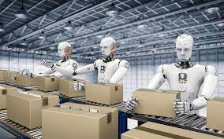

Robots are any automatically operated machine that replaces human effort,though it may not resemble human beings in appearance or perfom function in a humanlike manner .It was shown that robots are taking over peoples jobs .It is predicted that robots will replace more human workers in the future.Acoording to scietist,automation is expected to affect human work.The high accurancy and ROUND-THE-CLOCK availability make them more dependeble for work.Robots will replace 40% of jobs in the next 15 years.And ths will lead to high unemployment rate in our society.

There is an advantage of that if robots takes the humans labour.Work will be done in a short period of time....No equipments will be stolen and nothing will go missing.Robots will don't get distracted or need to take breaks.Work will be done well,Which will lead to happier employees


Many jobs has become easy by being replaced by robots.Robots are not just an idea of talking machines parts as we see in futuristic movies.there are variety of different types of robotic machines,great majority of them them appear in factories and in science technology work fields.Robots in factories help place a dangerous parts of job.However, there have been different perspective with robots replacing jobs.Robotic replacement may not have a negative effect,especially since it has helped our development to be able to survive.When they start to replace our jobs,the jobs we have today will be gone.A major part of the question would be "where are people going to find an income to provide for their families?"Lower classes of people would not be able to obtain job untroublesome,due to the level of education they obtain.Even if jobs are recycled and robots have countless of other benefits.there will still be a large number of people who will have trouble finding new job,after losing their previous one.However there are different solution to improve robotic replacemt.There are some advantages to robotic replacement.the only disadvantage would be for the lower jobs.